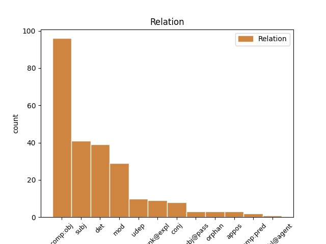
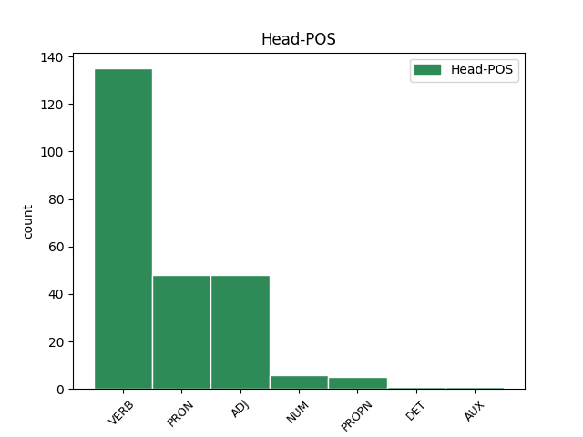
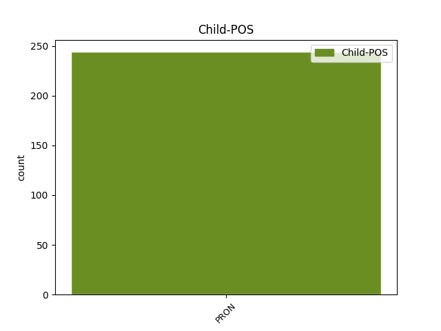

Distribution of features within this leaf



Agreement Rules sorted by frequency.
- When the dependent token is the direct object complements(comp:obj) of the head token, and the head token is VERB and the dependent token is PRON.
1 Aþþan _ _ _ _ 0 _ _ _
2 þata _ _ _ _ 0 _ _ _
3 kunneis _ _ _ _ 0 _ _ _
4 ei _ _ _ _ 0 _ _ _
5 in _ _ _ _ 0 _ _ _
6 spedistaim _ _ _ _ 0 _ _ _
7 dagam _ _ _ _ 0 _ _ _
8 atgaggand _ _ _ _ 0 _ _ _
9 jera _ _ _ _ 0 _ _ _
10 sleidja _ _ _ _ 0 _ _ _
11 jah _ _ _ _ 0 _ _ _
12 wairþand _ _ _ _ 0 _ _ _
13 mannans _ _ _ _ 0 _ _ _
14 sik sik PRON Pk Case=Acc|Gender=Masc|Number=Plur|Person=3|PronType=Prs|Reflex=Yes 15 comp:obj _ ref=2TIM_3.2
15 frijondans frijon VERB V- Case=Nom|Gender=Masc|Number=Plur|Strength=Weak|Tense=Pres|VerbForm=Part|Voice=Act 0 _ _ _
16 faihugairnai _ _ _ _ 0 _ _ _
17 bihaitjans _ _ _ _ 0 _ _ _
18 hauhhairtai _ _ _ _ 0 _ _ _
19 wajamerjandans _ _ _ _ 0 _ _ _
20 fadreinam _ _ _ _ 0 _ _ _
21 ungaƕairbai _ _ _ _ 0 _ _ _
22 launawargos _ _ _ _ 0 _ _ _
23 unairknans _ _ _ _ 0 _ _ _
24 unhunslagai _ _ _ _ 0 _ _ _
25 unmildjai _ _ _ _ 0 _ _ _
26 fairinondans _ _ _ _ 0 _ _ _
27 ungahabandans _ _ _ _ 0 _ _ _
28 sik _ _ _ _ 0 _ _ _
29 unmanarigwai _ _ _ _ 0 _ _ _
30 unseljai _ _ _ _ 0 _ _ _
31 fralewjandans _ _ _ _ 0 _ _ _
32 untilamalskai _ _ _ _ 0 _ _ _
33 ufbaulidai _ _ _ _ 0 _ _ _
34 frijondans _ _ _ _ 0 _ _ _
35 wiljan _ _ _ _ 0 _ _ _
36 seinana _ _ _ _ 0 _ _ _
37 mais _ _ _ _ 0 _ _ _
38 þau _ _ _ _ 0 _ _ _
39 guþ _ _ _ _ 0 _ _ _
40 habandans _ _ _ _ 0 _ _ _
41 hiwi _ _ _ _ 0 _ _ _
42 gagudeins _ _ _ _ 0 _ _ _
43 iþ _ _ _ _ 0 _ _ _
44 maht _ _ _ _ 0 _ _ _
45 izos _ _ _ _ 0 _ _ _
46 inwidandans _ _ _ _ 0 _ _ _
1 usdaudei _ _ _ _ 0 _ _ _
2 þuk þu PRON Pp Case=Acc|Gender=Masc|Number=Sing|Person=2|PronType=Prs 0 _ _ _
3 silban silba PRON Pk Case=Acc|Gender=Masc|Number=Sing|Person=3|PronType=Prs|Reflex=Yes 2 det _ ref=2TIM_2.15
4 gakusanana _ _ _ _ 0 _ _ _
5 usgiban _ _ _ _ 0 _ _ _
6 guda _ _ _ _ 0 _ _ _
7 waurstwjan _ _ _ _ 0 _ _ _
8 unaiwiskana _ _ _ _ 0 _ _ _
9 raihtaba _ _ _ _ 0 _ _ _
10 raidjandan _ _ _ _ 0 _ _ _
11 waurd _ _ _ _ 0 _ _ _
12 sunjos _ _ _ _ 0 _ _ _
1 samaleiko _ _ _ _ 0 _ _ _
2 þan _ _ _ _ 0 _ _ _
3 jah _ _ _ _ 0 _ _ _
4 waurstwa _ _ _ _ 0 _ _ _
5 goda _ _ _ _ 0 _ _ _
6 swikunþa _ _ _ _ 0 _ _ _
7 sind _ _ _ _ 0 _ _ _
8 jah _ _ _ _ 0 _ _ _
9 þoei saei PRON Pr Case=Nom|Gender=Neut|Number=Plur|PronType=Rel 12 subj _ ref=1TIM_5.25
10 aljaleikos _ _ _ _ 0 _ _ _
11 sik _ _ _ _ 0 _ _ _
12 habandona haban VERB V- Case=Nom|Gender=Neut|Number=Plur|Strength=Weak|Tense=Pres|VerbForm=Part|Voice=Act 0 _ _ _
13 filhan _ _ _ _ 0 _ _ _
14 ni _ _ _ _ 0 _ _ _
15 mahta _ _ _ _ 0 _ _ _
16 sind _ _ _ _ 0 _ _ _
1 qaþ _ _ _ _ 0 _ _ _
2 auk _ _ _ _ 0 _ _ _
3 sums sums ADJ Px Case=Nom|Gender=Masc|Number=Sing 0 _ _ _
4 ize is PRON Pp Case=Gen|Gender=Masc|Number=Plur|Person=3|PronType=Prs 3 mod _ ref=TIT_1.12
5 swes _ _ _ _ 0 _ _ _
6 ize _ _ _ _ 0 _ _ _
7 praufetus _ _ _ _ 0 _ _ _
1 þata _ _ _ _ 0 _ _ _
2 anþar _ _ _ _ 0 _ _ _
3 broþrjus _ _ _ _ 0 _ _ _
4 þisƕah _ _ _ _ 0 _ _ _
5 þatei _ _ _ _ 0 _ _ _
6 ist _ _ _ _ 0 _ _ _
7 sunjein _ _ _ _ 0 _ _ _
8 þisƕah _ _ _ _ 0 _ _ _
9 þatei _ _ _ _ 0 _ _ _
10 gariud _ _ _ _ 0 _ _ _
11 þisƕah _ _ _ _ 0 _ _ _
12 þatei _ _ _ _ 0 _ _ _
13 garaiht _ _ _ _ 0 _ _ _
14 þisƕah _ _ _ _ 0 _ _ _
15 þatei _ _ _ _ 0 _ _ _
16 weih _ _ _ _ 0 _ _ _
17 þisƕah _ _ _ _ 0 _ _ _
18 þatei _ _ _ _ 0 _ _ _
19 liubaleik _ _ _ _ 0 _ _ _
20 þisƕah _ _ _ _ 0 _ _ _
21 þatei saei PRON Pr Case=Nom|Gender=Neut|Number=Sing|PronType=Rel 22 subj _ ref=PHIL_4.8
22 wailameri wailamereis ADJ A- Case=Nom|Degree=Pos|Gender=Neut|Number=Sing|Strength=Strong 0 _ _ _
23 jabai _ _ _ _ 0 _ _ _
24 ƕo _ _ _ _ 0 _ _ _
25 godeino _ _ _ _ 0 _ _ _
26 jabai _ _ _ _ 0 _ _ _
27 ƕo _ _ _ _ 0 _ _ _
28 hazeino _ _ _ _ 0 _ _ _
29 þata _ _ _ _ 0 _ _ _
30 mitoþ _ _ _ _ 0 _ _ _
1 unte _ _ _ _ 0 _ _ _
2 us _ _ _ _ 0 _ _ _
3 þaim _ _ _ _ 0 _ _ _
4 sind _ _ _ _ 0 _ _ _
5 þaiei _ _ _ _ 0 _ _ _
6 sliupand _ _ _ _ 0 _ _ _
7 in _ _ _ _ 0 _ _ _
8 gardins _ _ _ _ 0 _ _ _
9 jah _ _ _ _ 0 _ _ _
10 frahunþana _ _ _ _ 0 _ _ _
11 tiuhand _ _ _ _ 0 _ _ _
12 qineina _ _ _ _ 0 _ _ _
13 afhlaþana _ _ _ _ 0 _ _ _
14 frawaurhtim _ _ _ _ 0 _ _ _
15 þoei _ _ _ _ 0 _ _ _
16 tiuhanda _ _ _ _ 0 _ _ _
17 du _ _ _ _ 0 _ _ _
18 lustum _ _ _ _ 0 _ _ _
19 missaleikaim _ _ _ _ 0 _ _ _
20 sinteino _ _ _ _ 0 _ _ _
21 laisjandona laisjan VERB V- Case=Acc|Gender=Neut|Number=Plur|Strength=Weak|Tense=Pres|VerbForm=Part|Voice=Act 0 _ _ _
22 sik sik PRON Pk Case=Acc|Gender=Neut|Number=Plur|Person=3|PronType=Prs|Reflex=Yes 21 unk@expl _ ref=2TIM_3.7
23 jan _ _ _ _ 0 _ _ _
24 ni _ _ _ _ 0 _ _ _
25 aiw _ _ _ _ 0 _ _ _
26 ƕanhun _ _ _ _ 0 _ _ _
27 in _ _ _ _ 0 _ _ _
28 ufkunþja _ _ _ _ 0 _ _ _
29 sunjos _ _ _ _ 0 _ _ _
30 qiman _ _ _ _ 0 _ _ _
31 mahteiga _ _ _ _ 0 _ _ _
1 aþþan _ _ _ _ 0 _ _ _
2 ni _ _ _ _ 0 _ _ _
3 þatainei _ _ _ _ 0 _ _ _
4 ina is PRON Pp Case=Acc|Gender=Masc|Number=Sing|Person=3|PronType=Prs 0 _ _ _
5 ak _ _ _ _ 0 _ _ _
6 jah _ _ _ _ 0 _ _ _
7 mik ik PRON Pp Case=Acc|Gender=Masc|Number=Sing|Person=1|PronType=Prs 4 conj _ ref=PHIL_2.27
8 ei _ _ _ _ 0 _ _ _
9 gaurein _ _ _ _ 0 _ _ _
10 ana _ _ _ _ 0 _ _ _
11 gaurein _ _ _ _ 0 _ _ _
12 ni _ _ _ _ 0 _ _ _
13 habau _ _ _ _ 0 _ _ _
1 aþþan _ _ _ _ 0 _ _ _
2 nu _ _ _ _ 0 _ _ _
3 at _ _ _ _ 0 _ _ _
4 qimandin _ _ _ _ 0 _ _ _
5 Teimauþaiu _ _ _ _ 0 _ _ _
6 at _ _ _ _ 0 _ _ _
7 unsis _ _ _ _ 0 _ _ _
8 fram _ _ _ _ 0 _ _ _
9 izwis _ _ _ _ 0 _ _ _
10 jah _ _ _ _ 0 _ _ _
11 gateihandin _ _ _ _ 0 _ _ _
12 uns _ _ _ _ 0 _ _ _
13 galaubein _ _ _ _ 0 _ _ _
14 jah _ _ _ _ 0 _ _ _
15 friaþwa _ _ _ _ 0 _ _ _
16 izwara _ _ _ _ 0 _ _ _
17 jah _ _ _ _ 0 _ _ _
18 þatei _ _ _ _ 0 _ _ _
19 gaminþi _ _ _ _ 0 _ _ _
20 unsar _ _ _ _ 0 _ _ _
21 habaiþ _ _ _ _ 0 _ _ _
22 god _ _ _ _ 0 _ _ _
23 sinteino _ _ _ _ 0 _ _ _
24 gairnjandans gairnjan VERB V- Case=Nom|Gender=Masc|Number=Plur|Strength=Weak|Tense=Pres|VerbForm=Part|Voice=Act 0 _ _ _
25 uns _ _ _ _ 0 _ _ _
26 gasaiƕan _ _ _ _ 0 _ _ _
27 swaswe _ _ _ _ 0 _ _ _
28 jah _ _ _ _ 0 _ _ _
29 weis weis PRON Pp Case=Nom|Gender=Masc|Number=Plur|Person=1|PronType=Prs 24 udep _ ref=1THESS_3.6
30 izwis _ _ _ _ 0 _ _ _
31 in _ _ _ _ 0 _ _ _
32 uh _ _ _ _ 0 _ _ _
33 þis _ _ _ _ 0 _ _ _
34 gaþrafstidai _ _ _ _ 0 _ _ _
35 sijum _ _ _ _ 0 _ _ _
36 broþrjus _ _ _ _ 0 _ _ _
37 fram _ _ _ _ 0 _ _ _
38 izwis _ _ _ _ 0 _ _ _
39 ana _ _ _ _ 0 _ _ _
40 allai _ _ _ _ 0 _ _ _
41 nauþai _ _ _ _ 0 _ _ _
42 jah _ _ _ _ 0 _ _ _
43 aglon _ _ _ _ 0 _ _ _
44 unsarai _ _ _ _ 0 _ _ _
45 in _ _ _ _ 0 _ _ _
46 izwaraizos _ _ _ _ 0 _ _ _
47 galaubeinais _ _ _ _ 0 _ _ _
1 nu _ _ _ _ 0 _ _ _
2 fagino _ _ _ _ 0 _ _ _
3 in _ _ _ _ 0 _ _ _
4 þaimei _ _ _ _ 0 _ _ _
5 winna _ _ _ _ 0 _ _ _
6 faur _ _ _ _ 0 _ _ _
7 izwis _ _ _ _ 0 _ _ _
8 jah _ _ _ _ 0 _ _ _
9 usfullja _ _ _ _ 0 _ _ _
10 gaidwa _ _ _ _ 0 _ _ _
11 aglono _ _ _ _ 0 _ _ _
12 Xristaus _ _ _ _ 0 _ _ _
13 in _ _ _ _ 0 _ _ _
14 leika _ _ _ _ 0 _ _ _
15 meinamma _ _ _ _ 0 _ _ _
16 faur _ _ _ _ 0 _ _ _
17 leik _ _ _ _ 0 _ _ _
18 is _ _ _ _ 0 _ _ _
19 þatei _ _ _ _ 0 _ _ _
20 ist _ _ _ _ 0 _ _ _
21 aikklesjo _ _ _ _ 0 _ _ _
22 þizozei _ _ _ _ 0 _ _ _
23 warþ _ _ _ _ 0 _ _ _
24 ik _ _ _ _ 0 _ _ _
25 andbahts _ _ _ _ 0 _ _ _
26 bi _ _ _ _ 0 _ _ _
27 ragina _ _ _ _ 0 _ _ _
28 gudis _ _ _ _ 0 _ _ _
29 þatei _ _ _ _ 0 _ _ _
30 giban _ _ _ _ 0 _ _ _
31 ist _ _ _ _ 0 _ _ _
32 mis _ _ _ _ 0 _ _ _
33 in _ _ _ _ 0 _ _ _
34 izwis _ _ _ _ 0 _ _ _
35 du _ _ _ _ 0 _ _ _
36 usfulljan _ _ _ _ 0 _ _ _
37 waurd _ _ _ _ 0 _ _ _
38 gudis _ _ _ _ 0 _ _ _
39 runa _ _ _ _ 0 _ _ _
40 sei _ _ _ _ 0 _ _ _
41 gafulgina _ _ _ _ 0 _ _ _
42 was _ _ _ _ 0 _ _ _
43 fram _ _ _ _ 0 _ _ _
44 aiwam _ _ _ _ 0 _ _ _
45 jah _ _ _ _ 0 _ _ _
46 fram _ _ _ _ 0 _ _ _
47 aldim _ _ _ _ 0 _ _ _
48 iþ _ _ _ _ 0 _ _ _
49 nu _ _ _ _ 0 _ _ _
50 gaswikunþida _ _ _ _ 0 _ _ _
51 warþ _ _ _ _ 0 _ _ _
52 þaim _ _ _ _ 0 _ _ _
53 weiham weihs ADJ A- Case=Dat|Degree=Pos|Gender=Masc|Number=Plur|Strength=Weak 0 _ _ _
54 is is PRON Pp Case=Gen|Gender=Masc|Number=Sing|Person=3|PronType=Prs 53 det _ ref=COL_1.26
55 þaimei _ _ _ _ 0 _ _ _
56 wilda _ _ _ _ 0 _ _ _
57 guþ _ _ _ _ 0 _ _ _
58 gakannjan _ _ _ _ 0 _ _ _
59 gabein _ _ _ _ 0 _ _ _
60 wulþaus _ _ _ _ 0 _ _ _
61 þizos _ _ _ _ 0 _ _ _
62 runos _ _ _ _ 0 _ _ _
63 in _ _ _ _ 0 _ _ _
64 þiudom _ _ _ _ 0 _ _ _
65 þatei _ _ _ _ 0 _ _ _
66 ist _ _ _ _ 0 _ _ _
67 Xristus _ _ _ _ 0 _ _ _
68 in _ _ _ _ 0 _ _ _
69 izwis _ _ _ _ 0 _ _ _
70 wens _ _ _ _ 0 _ _ _
71 wulþaus _ _ _ _ 0 _ _ _
72 þanei _ _ _ _ 0 _ _ _
73 weis _ _ _ _ 0 _ _ _
74 gateiham _ _ _ _ 0 _ _ _
75 talzjandans _ _ _ _ 0 _ _ _
76 all _ _ _ _ 0 _ _ _
77 manne _ _ _ _ 0 _ _ _
78 jah _ _ _ _ 0 _ _ _
79 laisjandans _ _ _ _ 0 _ _ _
80 all _ _ _ _ 0 _ _ _
81 manne _ _ _ _ 0 _ _ _
82 in _ _ _ _ 0 _ _ _
83 allai _ _ _ _ 0 _ _ _
84 handugein _ _ _ _ 0 _ _ _
85 ei _ _ _ _ 0 _ _ _
86 atsatjaima _ _ _ _ 0 _ _ _
87 all _ _ _ _ 0 _ _ _
88 manne _ _ _ _ 0 _ _ _
89 fullawitan _ _ _ _ 0 _ _ _
90 in _ _ _ _ 0 _ _ _
91 Xristau _ _ _ _ 0 _ _ _
92 Iesu _ _ _ _ 0 _ _ _
93 du _ _ _ _ 0 _ _ _
94 þammei _ _ _ _ 0 _ _ _
95 arbaidja _ _ _ _ 0 _ _ _
96 usdaudjands _ _ _ _ 0 _ _ _
97 bi _ _ _ _ 0 _ _ _
98 waurstwa _ _ _ _ 0 _ _ _
99 sei _ _ _ _ 0 _ _ _
100 inna _ _ _ _ 0 _ _ _
101 uswaurkeiþ _ _ _ _ 0 _ _ _
102 in _ _ _ _ 0 _ _ _
103 mis _ _ _ _ 0 _ _ _
104 in _ _ _ _ 0 _ _ _
105 mahtai _ _ _ _ 0 _ _ _
1 iþ _ _ _ _ 0 _ _ _
2 ains ains NUM Ma Case=Nom|Gender=Masc|Number=Sing 0 _ _ _
3 þan _ _ _ _ 0 _ _ _
4 ize is PRON Pp Case=Gen|Gender=Masc|Number=Plur|Person=3|PronType=Prs 2 mod _ ref=LUKE_17.15
5 gaumjands _ _ _ _ 0 _ _ _
6 þammei _ _ _ _ 0 _ _ _
7 hrains _ _ _ _ 0 _ _ _
8 warþ _ _ _ _ 0 _ _ _
9 gawandida _ _ _ _ 0 _ _ _
10 sik _ _ _ _ 0 _ _ _
11 miþ _ _ _ _ 0 _ _ _
12 stibnai _ _ _ _ 0 _ _ _
13 mikilai _ _ _ _ 0 _ _ _
14 hauhjands _ _ _ _ 0 _ _ _
15 guþ _ _ _ _ 0 _ _ _
16 jah _ _ _ _ 0 _ _ _
17 draus _ _ _ _ 0 _ _ _
18 ana _ _ _ _ 0 _ _ _
19 andawleizn _ _ _ _ 0 _ _ _
20 faura _ _ _ _ 0 _ _ _
21 fotum _ _ _ _ 0 _ _ _
22 is _ _ _ _ 0 _ _ _
23 awiliudonds _ _ _ _ 0 _ _ _
24 imma _ _ _ _ 0 _ _ _
1 Jabai _ _ _ _ 0 _ _ _
2 ƕo _ _ _ _ 0 _ _ _
3 nu _ _ _ _ 0 _ _ _
4 gaþrafsteino _ _ _ _ 0 _ _ _
5 in _ _ _ _ 0 _ _ _
6 Xristau _ _ _ _ 0 _ _ _
7 jabai _ _ _ _ 0 _ _ _
8 ƕo _ _ _ _ 0 _ _ _
9 gaþlaihte _ _ _ _ 0 _ _ _
10 friaþwos _ _ _ _ 0 _ _ _
11 jabai _ _ _ _ 0 _ _ _
12 ƕo _ _ _ _ 0 _ _ _
13 gamainduþe _ _ _ _ 0 _ _ _
14 ahmins _ _ _ _ 0 _ _ _
15 jabai _ _ _ _ 0 _ _ _
16 ƕo _ _ _ _ 0 _ _ _
17 mildiþo _ _ _ _ 0 _ _ _
18 jah _ _ _ _ 0 _ _ _
19 gableiþeino _ _ _ _ 0 _ _ _
20 usfulleiþ _ _ _ _ 0 _ _ _
21 meina _ _ _ _ 0 _ _ _
22 fahed _ _ _ _ 0 _ _ _
23 ei _ _ _ _ 0 _ _ _
24 þata _ _ _ _ 0 _ _ _
25 samo _ _ _ _ 0 _ _ _
26 hugjaiþ _ _ _ _ 0 _ _ _
27 þo _ _ _ _ 0 _ _ _
28 samon _ _ _ _ 0 _ _ _
29 friaþwa _ _ _ _ 0 _ _ _
30 habandans _ _ _ _ 0 _ _ _
31 samasaiwalai _ _ _ _ 0 _ _ _
32 samafraþjai _ _ _ _ 0 _ _ _
33 ni _ _ _ _ 0 _ _ _
34 waiht _ _ _ _ 0 _ _ _
35 bi _ _ _ _ 0 _ _ _
36 haifstai _ _ _ _ 0 _ _ _
37 aiþþau _ _ _ _ 0 _ _ _
38 lausai _ _ _ _ 0 _ _ _
39 hauheinai _ _ _ _ 0 _ _ _
40 ak _ _ _ _ 0 _ _ _
41 in _ _ _ _ 0 _ _ _
42 allai _ _ _ _ 0 _ _ _
43 hauneinai _ _ _ _ 0 _ _ _
44 gahugdais _ _ _ _ 0 _ _ _
45 anþar anþar PRON Pc Case=Nom|Gender=Masc|Number=Sing|PronType=Rcp 47 comp:pred _ ref=PHIL_2.3
46 anþarana _ _ _ _ 0 _ _ _
47 munands munan VERB V- Case=Nom|Gender=Masc|Number=Sing|Strength=Strong|Tense=Pres|VerbForm=Part|Voice=Act 0 _ _ _
48 sis _ _ _ _ 0 _ _ _
49 auhuman _ _ _ _ 0 _ _ _
50 ni _ _ _ _ 0 _ _ _
51 þo _ _ _ _ 0 _ _ _
52 seina _ _ _ _ 0 _ _ _
53 ƕarjizuh _ _ _ _ 0 _ _ _
54 mitondans _ _ _ _ 0 _ _ _
55 ak _ _ _ _ 0 _ _ _
56 jah _ _ _ _ 0 _ _ _
57 þo _ _ _ _ 0 _ _ _
58 anþaraize _ _ _ _ 0 _ _ _
59 ƕarjizuh _ _ _ _ 0 _ _ _
1 þiuþido þiuþjan VERB V- Aspect=Perf|Case=Nom|Gender=Fem|Number=Sing|Strength=Weak|Tense=Past|VerbForm=Part|Voice=Pass 0 _ _ _
2 þu þu PRON Pp Case=Nom|Gender=Fem|Number=Sing|Person=2|PronType=Prs 1 subj@pass _ ref=LUKE_1.42
3 in _ _ _ _ 0 _ _ _
4 qinom _ _ _ _ 0 _ _ _
5 jah _ _ _ _ 0 _ _ _
6 þiuþido _ _ _ _ 0 _ _ _
7 akran _ _ _ _ 0 _ _ _
8 qiþaus _ _ _ _ 0 _ _ _
9 þeinis _ _ _ _ 0 _ _ _
1 aþþan _ _ _ _ 0 _ _ _
2 weis weis PRON Pp Case=Nom|Gender=Masc|Number=Plur|Person=1|PronType=Prs 0 _ _ _
3 sium _ _ _ _ 0 _ _ _
4 bimait _ _ _ _ 0 _ _ _
5 weis weis PRON Pp Case=Nom|Gender=Masc|Number=Plur|Person=1|PronType=Prs 2 appos _ ref=PHIL_3.3
6 ahmin _ _ _ _ 0 _ _ _
7 guda _ _ _ _ 0 _ _ _
8 skalkinondans _ _ _ _ 0 _ _ _
9 jah _ _ _ _ 0 _ _ _
10 ƕopandans _ _ _ _ 0 _ _ _
11 in _ _ _ _ 0 _ _ _
12 Xristau _ _ _ _ 0 _ _ _
13 Iesu _ _ _ _ 0 _ _ _
14 jan _ _ _ _ 0 _ _ _
15 ni _ _ _ _ 0 _ _ _
16 in _ _ _ _ 0 _ _ _
17 leika _ _ _ _ 0 _ _ _
18 gatrauam _ _ _ _ 0 _ _ _
19 jah _ _ _ _ 0 _ _ _
20 þan _ _ _ _ 0 _ _ _
21 ik _ _ _ _ 0 _ _ _
22 habands _ _ _ _ 0 _ _ _
23 trauain _ _ _ _ 0 _ _ _
24 jah _ _ _ _ 0 _ _ _
25 in _ _ _ _ 0 _ _ _
26 leika _ _ _ _ 0 _ _ _
1 ƕas ƕas PRON Pi Case=Nom|Gender=Masc|Number=Sing|PronType=Int 0 _ _ _
2 izwara jūs PRON Pp Case=Gen|Gender=Masc|Number=Plur|Person=2|PronType=Prs 1 mod _ ref=JOHN_8.46
3 gasakiþ _ _ _ _ 0 _ _ _
4 mik _ _ _ _ 0 _ _ _
5 bi _ _ _ _ 0 _ _ _
6 frawaurht _ _ _ _ 0 _ _ _
1 aþþan _ _ _ _ 0 _ _ _
2 nu _ _ _ _ 0 _ _ _
3 at _ _ _ _ 0 _ _ _
4 qimandin _ _ _ _ 0 _ _ _
5 Teimauþaiu _ _ _ _ 0 _ _ _
6 at _ _ _ _ 0 _ _ _
7 unsis _ _ _ _ 0 _ _ _
8 fram _ _ _ _ 0 _ _ _
9 izwis _ _ _ _ 0 _ _ _
10 jah _ _ _ _ 0 _ _ _
11 gateihandin _ _ _ _ 0 _ _ _
12 uns _ _ _ _ 0 _ _ _
13 galaubein _ _ _ _ 0 _ _ _
14 jah _ _ _ _ 0 _ _ _
15 friaþwa _ _ _ _ 0 _ _ _
16 izwara _ _ _ _ 0 _ _ _
17 jah _ _ _ _ 0 _ _ _
18 þatei _ _ _ _ 0 _ _ _
19 gaminþi _ _ _ _ 0 _ _ _
20 unsar _ _ _ _ 0 _ _ _
21 habaiþ _ _ _ _ 0 _ _ _
22 god _ _ _ _ 0 _ _ _
23 sinteino _ _ _ _ 0 _ _ _
24 gairnjandans _ _ _ _ 0 _ _ _
25 uns _ _ _ _ 0 _ _ _
26 gasaiƕan _ _ _ _ 0 _ _ _
27 swaswe _ _ _ _ 0 _ _ _
28 jah _ _ _ _ 0 _ _ _
29 weis weis PRON Pp Case=Nom|Gender=Masc|Number=Plur|Person=1|PronType=Prs 0 _ _ _
30 izwis jūs PRON Pp Case=Acc|Gender=Masc|Number=Plur|Person=2|PronType=Prs 29 orphan _ ref=1THESS_3.6
31 in _ _ _ _ 0 _ _ _
32 uh _ _ _ _ 0 _ _ _
33 þis _ _ _ _ 0 _ _ _
34 gaþrafstidai _ _ _ _ 0 _ _ _
35 sijum _ _ _ _ 0 _ _ _
36 broþrjus _ _ _ _ 0 _ _ _
37 fram _ _ _ _ 0 _ _ _
38 izwis _ _ _ _ 0 _ _ _
39 ana _ _ _ _ 0 _ _ _
40 allai _ _ _ _ 0 _ _ _
41 nauþai _ _ _ _ 0 _ _ _
42 jah _ _ _ _ 0 _ _ _
43 aglon _ _ _ _ 0 _ _ _
44 unsarai _ _ _ _ 0 _ _ _
45 in _ _ _ _ 0 _ _ _
46 izwaraizos _ _ _ _ 0 _ _ _
47 galaubeinais _ _ _ _ 0 _ _ _
1 aþþan _ _ _ _ 0 _ _ _
2 þande _ _ _ _ 0 _ _ _
3 jus jūs PRON Pp Case=Nom|Gender=Masc|Number=Plur|Person=2|PronType=Prs 4 subj _ ref=GAL_3.29
4 Xristaus Xristus PROPN Ne Case=Gen|Gender=Masc|Number=Sing 0 _ _ _
5 þannu _ _ _ _ 0 _ _ _
6 Abrahamis _ _ _ _ 0 _ _ _
7 fraiw _ _ _ _ 0 _ _ _
8 sijuþ _ _ _ _ 0 _ _ _
9 jab _ _ _ _ 0 _ _ _
10 bi _ _ _ _ 0 _ _ _
11 gahaitam _ _ _ _ 0 _ _ _
12 arbjans _ _ _ _ 0 _ _ _
1 jah _ _ _ _ 0 _ _ _
2 ataugiþs at-augjan VERB V- Aspect=Perf|Case=Nom|Gender=Masc|Number=Sing|Strength=Strong|Tense=Past|VerbForm=Part|Voice=Pass 0 _ _ _
3 warþ _ _ _ _ 0 _ _ _
4 im is PRON Pp Case=Dat|Gender=Masc|Number=Plur|Person=3|PronType=Prs 2 comp:obl@agent _ ref=MARK_9.4
5 Helias _ _ _ _ 0 _ _ _
6 miþ _ _ _ _ 0 _ _ _
7 Mose _ _ _ _ 0 _ _ _
1 rabbei _ _ _ _ 0 _ _ _
2 goþ _ _ _ _ 0 _ _ _
3 ist _ _ _ _ 0 _ _ _
4 unsis _ _ _ _ 0 _ _ _
5 her _ _ _ _ 0 _ _ _
6 wisan _ _ _ _ 0 _ _ _
7 jah _ _ _ _ 0 _ _ _
8 gawaurkjam _ _ _ _ 0 _ _ _
9 hlijans _ _ _ _ 0 _ _ _
10 þrins _ _ _ _ 0 _ _ _
11 þus þu PRON Pp Case=Dat|Gender=Masc|Number=Sing|Person=2|PronType=Prs 12 orphan _ ref=MARK_9.5
12 ainana ains NUM Ma Case=Acc|Gender=Masc|Number=Sing 0 _ _ _
13 jah _ _ _ _ 0 _ _ _
14 Mose _ _ _ _ 0 _ _ _
15 ainana _ _ _ _ 0 _ _ _
16 jah _ _ _ _ 0 _ _ _
17 ainana _ _ _ _ 0 _ _ _
18 Helijin _ _ _ _ 0 _ _ _
1 aiþþau _ _ _ _ 0 _ _ _
2 nauhþanuh _ _ _ _ 0 _ _ _
3 fairra _ _ _ _ 0 _ _ _
4 imma is PRON Pp Case=Dat|Gender=Masc|Number=Sing|Person=3|PronType=Prs 5 subj _ ref=LUKE_14.32
5 wisandin wisan AUX V- Case=Dat|Gender=Masc|Number=Sing|Strength=Weak|Tense=Pres|VerbForm=Part|Voice=Act 0 _ _ _
6 insandjands _ _ _ _ 0 _ _ _
7 airu _ _ _ _ 0 _ _ _
8 bidjiþ _ _ _ _ 0 _ _ _
9 gawairþjis _ _ _ _ 0 _ _ _
1 jaþ _ _ _ _ 0 _ _ _
2 þan _ _ _ _ 0 _ _ _
3 jabai _ _ _ _ 0 _ _ _
4 stoja _ _ _ _ 0 _ _ _
5 ik _ _ _ _ 0 _ _ _
6 staua _ _ _ _ 0 _ _ _
7 meina _ _ _ _ 0 _ _ _
8 sunjeina _ _ _ _ 0 _ _ _
9 ist _ _ _ _ 0 _ _ _
10 unte _ _ _ _ 0 _ _ _
11 ains ains NUM Ma Case=Nom|Gender=Masc|Number=Sing 0 _ _ _
12 ni _ _ _ _ 0 _ _ _
13 im _ _ _ _ 0 _ _ _
14 ak _ _ _ _ 0 _ _ _
15 ik ik PRON Pp Case=Nom|Gender=Masc|Number=Sing|Person=1|PronType=Prs 11 conj _ ref=JOHN_8.16
16 jah _ _ _ _ 0 _ _ _
17 saei _ _ _ _ 0 _ _ _
18 sandida _ _ _ _ 0 _ _ _
19 mik _ _ _ _ 0 _ _ _
20 atta _ _ _ _ 0 _ _ _
1 iþ _ _ _ _ 0 _ _ _
2 mis _ _ _ _ 0 _ _ _
3 ni _ _ _ _ 0 _ _ _
4 sijai _ _ _ _ 0 _ _ _
5 ƕopan _ _ _ _ 0 _ _ _
6 ni _ _ _ _ 0 _ _ _
7 in _ _ _ _ 0 _ _ _
8 waihtai _ _ _ _ 0 _ _ _
9 niba _ _ _ _ 0 _ _ _
10 in _ _ _ _ 0 _ _ _
11 galgins _ _ _ _ 0 _ _ _
12 fraujins _ _ _ _ 0 _ _ _
13 unsaris _ _ _ _ 0 _ _ _
14 Iesuis _ _ _ _ 0 _ _ _
15 Xristaus _ _ _ _ 0 _ _ _
16 þairh _ _ _ _ 0 _ _ _
17 þanei _ _ _ _ 0 _ _ _
18 mis _ _ _ _ 0 _ _ _
19 fairƕus _ _ _ _ 0 _ _ _
20 ushramiþs us-hramjan VERB V- Aspect=Perf|Case=Nom|Gender=Masc|Number=Sing|Strength=Strong|Tense=Past|VerbForm=Part|Voice=Pass 0 _ _ _
21 ist _ _ _ _ 0 _ _ _
22 jah _ _ _ _ 0 _ _ _
23 ik ik PRON Pp Case=Nom|Gender=Masc|Number=Sing|Person=1|PronType=Prs 20 conj _ ref=GAL_6.14
24 fairƕau _ _ _ _ 0 _ _ _
1 jah _ _ _ _ 0 _ _ _
2 guþ _ _ _ _ 0 _ _ _
3 ƕaiwa _ _ _ _ 0 _ _ _
4 weihaba _ _ _ _ 0 _ _ _
5 jah _ _ _ _ 0 _ _ _
6 garaihtaba _ _ _ _ 0 _ _ _
7 jah _ _ _ _ 0 _ _ _
8 unfairinodaba _ _ _ _ 0 _ _ _
9 izwis _ _ _ _ 0 _ _ _
10 þaim _ _ _ _ 0 _ _ _
11 galaubjandam _ _ _ _ 0 _ _ _
12 wesum _ _ _ _ 0 _ _ _
13 swaswe _ _ _ _ 0 _ _ _
14 wituþ _ _ _ _ 0 _ _ _
15 ainƕarjanoh ainƕarjizuh ADJ Px Case=Acc|Gender=Masc|Number=Sing 0 _ _ _
16 izwara _ _ _ _ 0 _ _ _
17 swe _ _ _ _ 0 _ _ _
18 atta _ _ _ _ 0 _ _ _
19 barna _ _ _ _ 0 _ _ _
20 seina _ _ _ _ 0 _ _ _
21 bidjandans _ _ _ _ 0 _ _ _
22 izwis jūs PRON Pp Case=Acc|Gender=Masc|Number=Plur|Person=2|PronType=Prs 15 appos _ ref=1THESS_2.11
23 jah _ _ _ _ 0 _ _ _
24 gaþlaihandans _ _ _ _ 0 _ _ _
25 jah _ _ _ _ 0 _ _ _
26 weitwodjandans _ _ _ _ 0 _ _ _
27 du _ _ _ _ 0 _ _ _
28 gaggan _ _ _ _ 0 _ _ _
29 izwis _ _ _ _ 0 _ _ _
30 wairþaba _ _ _ _ 0 _ _ _
31 gudis _ _ _ _ 0 _ _ _
32 saei _ _ _ _ 0 _ _ _
33 laþoda _ _ _ _ 0 _ _ _
34 izwis _ _ _ _ 0 _ _ _
35 du _ _ _ _ 0 _ _ _
36 seinai _ _ _ _ 0 _ _ _
37 þiudangardjai _ _ _ _ 0 _ _ _
38 jah _ _ _ _ 0 _ _ _
39 wulþau _ _ _ _ 0 _ _ _
1 awiliudon _ _ _ _ 0 _ _ _
2 skulum _ _ _ _ 0 _ _ _
3 guda _ _ _ _ 0 _ _ _
4 sinteino _ _ _ _ 0 _ _ _
5 in _ _ _ _ 0 _ _ _
6 izwara _ _ _ _ 0 _ _ _
7 broþrjus _ _ _ _ 0 _ _ _
8 swaswe _ _ _ _ 0 _ _ _
9 wairþ _ _ _ _ 0 _ _ _
10 ist _ _ _ _ 0 _ _ _
11 unte _ _ _ _ 0 _ _ _
12 ufarwahseiþ _ _ _ _ 0 _ _ _
13 galaubeins _ _ _ _ 0 _ _ _
14 izwara _ _ _ _ 0 _ _ _
15 jah _ _ _ _ 0 _ _ _
16 managniþ _ _ _ _ 0 _ _ _
17 friaþwa _ _ _ _ 0 _ _ _
18 ainƕarjizuh ainƕarjizuh DET Px Case=Gen|Gender=Masc|Number=Sing 0 _ _ _
19 allaize _ _ _ _ 0 _ _ _
20 izwara jūs PRON Pp Case=Gen|Gender=Masc|Number=Plur|Person=2|PronType=Prs 18 mod _ ref=2THESS_1.3
21 in _ _ _ _ 0 _ _ _
22 izwis _ _ _ _ 0 _ _ _
23 misso _ _ _ _ 0 _ _ _
1 Marku _ _ _ _ 0 _ _ _
2 andnimands _ _ _ _ 0 _ _ _
3 brigg _ _ _ _ 0 _ _ _
4 miþ _ _ _ _ 0 _ _ _
5 þus _ _ _ _ 0 _ _ _
6 silbin _ _ _ _ 0 _ _ _
7 unte _ _ _ _ 0 _ _ _
8 ist _ _ _ _ 0 _ _ _
9 mis ik PRON Pp Case=Dat|Gender=Masc|Number=Sing|Person=1|PronType=Prs 10 udep _ ref=2TIM_4.11
10 bruks brūks ADJ A- Case=Nom|Degree=Pos|Gender=Masc|Number=Sing|Strength=Strong 0 _ _ _
11 du _ _ _ _ 0 _ _ _
12 andbahtja _ _ _ _ 0 _ _ _
1 Iþ _ _ _ _ 0 _ _ _
2 þu _ _ _ _ 0 _ _ _
3 rodei _ _ _ _ 0 _ _ _
4 þatei saei PRON Pr Case=Acc|Gender=Neut|Number=Sing|PronType=Rel 5 comp:obj _ ref=TIT_2.1
5 gadof ga-dofs* ADJ A- Case=Nom|Degree=Pos|Gender=Neut|Number=Sing|Strength=Strong 0 _ _ _
6 ist _ _ _ _ 0 _ _ _
7 þizai _ _ _ _ 0 _ _ _
8 hailon _ _ _ _ 0 _ _ _
9 laiseinai _ _ _ _ 0 _ _ _
Disagree Examples:
1 iþ _ _ _ _ 0 _ _ _
2 Iesus _ _ _ _ 0 _ _ _
3 gawandjands ga-wandjan VERB V- Case=Nom|Gender=Masc|Number=Sing|Strength=Strong|Tense=Pres|VerbForm=Part|Voice=Act 0 _ _ _
4 sik sik PRON Pk Case=Acc|Gender=Fem|Number=Sing|Person=3|PronType=Prs|Reflex=Yes 3 unk@expl _ ref=MATT_9.22
5 jah _ _ _ _ 0 _ _ _
6 gasaiƕands _ _ _ _ 0 _ _ _
7 þo _ _ _ _ 0 _ _ _
8 qaþ _ _ _ _ 0 _ _ _
1 sa _ _ _ _ 0 _ _ _
2 andnimands and-niman VERB V- Case=Nom|Gender=Masc|Number=Sing|Strength=Strong|Tense=Pres|VerbForm=Part|Voice=Act 0 _ _ _
3 izwis jūs PRON Pp Case=Acc|Gender=Fem,Masc|Number=Plur|Person=2|PronType=Prs 2 comp:obj _ ref=MATT_10.40
4 mik _ _ _ _ 0 _ _ _
5 andnimiþ _ _ _ _ 0 _ _ _
6 jah _ _ _ _ 0 _ _ _
7 sa _ _ _ _ 0 _ _ _
8 mik _ _ _ _ 0 _ _ _
9 andnimands _ _ _ _ 0 _ _ _
10 andnimiþ _ _ _ _ 0 _ _ _
11 þana _ _ _ _ 0 _ _ _
12 sandjandan _ _ _ _ 0 _ _ _
13 mik _ _ _ _ 0 _ _ _
1 ƕa _ _ _ _ 0 _ _ _
2 uns weis PRON Pp Case=Dat|Gender=Fem|Number=Plur|Person=1|PronType=Prs 0 _ _ _
3 jah _ _ _ _ 0 _ _ _
4 þus þu PRON Pp Case=Dat|Gender=Masc|Number=Sing|Person=2|PronType=Prs 2 conj _ ref=MARK_1.24
1 jah _ _ _ _ 0 _ _ _
2 qemun _ _ _ _ 0 _ _ _
3 þan _ _ _ _ 0 _ _ _
4 aiþei _ _ _ _ 0 _ _ _
5 is _ _ _ _ 0 _ _ _
6 jah _ _ _ _ 0 _ _ _
7 broþrjus _ _ _ _ 0 _ _ _
8 is _ _ _ _ 0 _ _ _
9 jah _ _ _ _ 0 _ _ _
10 uta _ _ _ _ 0 _ _ _
11 standandona _ _ _ _ 0 _ _ _
12 insandidedun _ _ _ _ 0 _ _ _
13 du _ _ _ _ 0 _ _ _
14 imma _ _ _ _ 0 _ _ _
15 haitandona haitan VERB V- Case=Nom|Gender=Neut|Number=Plur|Strength=Weak|Tense=Pres|VerbForm=Part|Voice=Act 0 _ _ _
16 ina is PRON Pp Case=Acc|Gender=Masc|Number=Sing|Person=3|PronType=Prs 15 comp:obj _ ref=MARK_3.31
1 jah _ _ _ _ 0 _ _ _
2 nimands _ _ _ _ 0 _ _ _
3 barn _ _ _ _ 0 _ _ _
4 gasatida _ _ _ _ 0 _ _ _
5 ita _ _ _ _ 0 _ _ _
6 in _ _ _ _ 0 _ _ _
7 midjaim _ _ _ _ 0 _ _ _
8 im _ _ _ _ 0 _ _ _
9 jah _ _ _ _ 0 _ _ _
10 ana _ _ _ _ 0 _ _ _
11 armins _ _ _ _ 0 _ _ _
12 nimands niman VERB V- Case=Nom|Gender=Masc|Number=Sing|Strength=Strong|Tense=Pres|VerbForm=Part|Voice=Act 0 _ _ _
13 ita is PRON Pp Case=Acc|Gender=Neut|Number=Sing|Person=3|PronType=Prs 12 comp:obj _ ref=MARK_9.36
14 qaþ _ _ _ _ 0 _ _ _
15 du _ _ _ _ 0 _ _ _
16 im _ _ _ _ 0 _ _ _